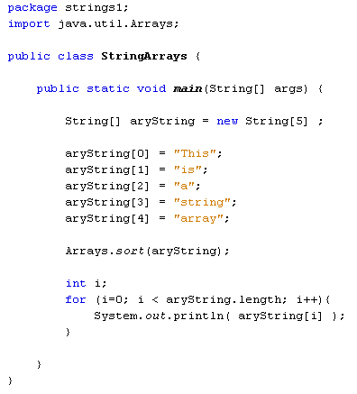

Learn Java- Complete Offline Beginners Guide
Before we get to manipulating strings of text, here's some basic information on what strings actually are.
How Java Stores Strings
A string is a series of Unicode characters held under a variable name. Take the following string:
String someText = "Bill";
This tells Java to set up a string object with the four characters "B", "i", "l" and another "l". In the Unicode character set, these values are: \u0042, \u0069, \u006c, \u006c. Unicode values are stored as hexadecimals numbers. Capital letters (A to Z) are stored using the values \u0041 to \u005a, while lowercase letters (a to z) are stored using the hexadecimals values \u0061 to \u007a.
In the previous section, we had an array which held strings of text. We then sorted the array:

When the programme is run, the output is this:

We noted that the word "This" comes first. If the array is supposed to be sorted alphabetically, however, you would expect the word "a" to come first. The reason it doesn't is because lowercase "a" has a hexadecimal value of u\0061, which is the decimal number 97. But uppercase "T" has a hexadecimal value of u\0054, which is the decimal number 84. 84 is lower than 97, so the "T" comes first.
OK, let's do some work manipulating strings of text. The string methods we'll take a look at are:
toUpperCasse
toLowerCase
compareTo
IndexOf
endWith, startsWith
Substring
Equals
charAt
trim
valueOf
First up are the easy ones, converting to upper and lower case letters. You'll meet them in the next part.